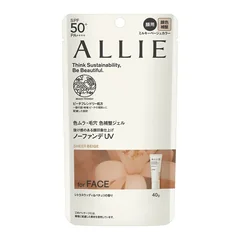

面の色ムラに

ALLIE
クロノビューティ カラーチューニングUV 03 40g
40g
¥1980税込・出典掲載価格
選び方と声
- 選ぶ条件：頬の赤みや口まわりのくすんだ色など、境目のない色ムラが気になる人。公式の説明では、色ムラ・毛穴をカバーするミルキーベージュの日焼け止め（SPF50+・PA++++）で、化粧下地にもなる。
- 口コミには、少しトーンアップして肌がきれいに見える、という声があった
気になる声気になる点：色が濃く感じる・伸びにくいという声もあり、好みが分かれる。香りがある。点のシミはこの1本に任せない
販売価格・容量・送料はリンク先でご確認ください